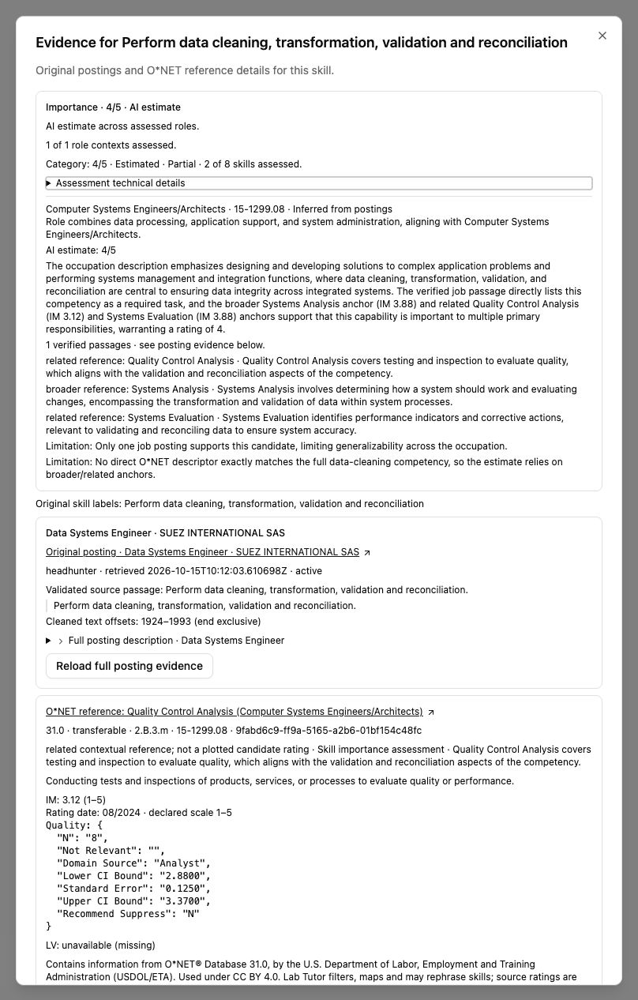
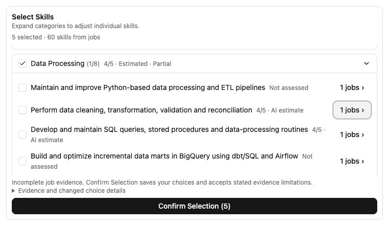

Skill importance is live.
Pushed and deployed the automatic analyst, skill and category labels, and source explanations. The existing teacher decisions and course-setup flow are preserved.
Open your Big Data workspace →
Coverage is limited. The production assessment finished in 60.06 seconds. Two skills have an AI estimate of 4/5; the other 58 are explicitly “Not assessed” after model-request failures and the deadline. All 60 skills remain selectable. This is partial guidance.
The earlier isolated run scored 11/60. Production coverage was lower; no missing scores were invented, and the assessment was not repeated after the connection interruption.

What I tested on Big Data
- Ran the deployed service on the existing saved analysis under the normal execution lease. All 60 outcomes were accounted for.
- Confirmed the normal review read validates the saved assessment and the teacher page displays its labels.
- Inspected “Perform data cleaning, transformation, validation and reconciliation”: 4/5 AI estimate; category 4/5 Estimated · Partial, 2 of 8 skills assessed.
- Verified its original HeadHunter posting, retained source passage and three readable O*NET 31.0 anchors. Official anchor values remain 3.12, 3.88 and 3.88; the skill’s 4/5 is explicitly an AI estimate.
- Checked 1440×900, 1280×720 and 390×844 CSS viewports: the same 36 main-card buttons, no page overflow, evidence dialog contained, Escape restores focus.
- Preserved all five selections, zero exclusions, 21 posting records, 38 material records, conversation and candidate/selection/publication revisions (1/2/0).
This reused saved jobs and extracted skills. It did not re-upload materials, re-fetch jobs, redo extraction, remap the curriculum or publish the course. Production inspection did not submit chat messages or confirm a new selection.




Release and verification
| Check | Result |
|---|---|
| Git | Feature branch pushed at 4051b9a1947162737dfbc719d7ffa3bf52c18757; existing PR #84. Main was not merged. |
| Azure | API, frontend and custom-domain frontend Running/Succeeded. The domain frontend is ready on frontend-domain--priority-4051b9a1. Images use immutable digests. |
| Runtime | Health 200; new priority API schema and six deployed source hashes match. CPU runtime, full app and DTO imports passed. Both public frontend addresses serve JavaScript bytes matching the release image. |
| Regression checks | 205 backend tests; 275 integrated frontend tests; Ruff, frontend lint and build passed. One existing frontend lint warning remains. The known broad-suite Vitest discovery failure is outside this targeted pass; no fully green broad suite is claimed. |
| Current configuration | Priority analyst enabled with deepseek-v4.1-flash. Other agents’ model settings, secrets, identities, scaling and ingress were preserved. The previously deployed guided course setup was retained unchanged. |
The normal image upload hit a local Docker proxy timeout. Backend dependencies, lockfile and entrypoint were unchanged, so the release uses the exact verified production runtime as its base with the current application files. Runtime imports and source hashes were checked before deployment.
Rollback guidance: set LAB_TUTOR_MARKET_SKILL_PRIORITY_ENABLED=false. The source default remains false; production explicitly enables it. No student API changes were introduced.
The earlier live held-out evaluation passed 13/15 targets within one point and 5/5 weak controls. That does not establish expert calibration for specific technologies or accuracy for this course’s two estimates.
Rollout receipt · Big Data preservation and coverage · Live browser checks · Regression checks · Public API check · Implementation and independent review